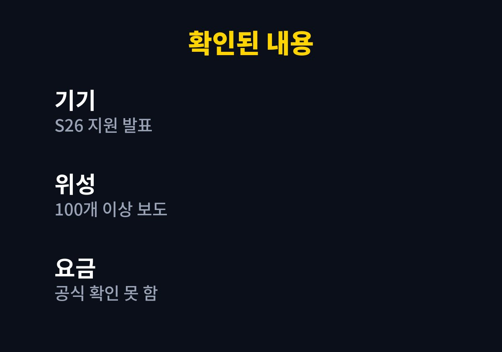
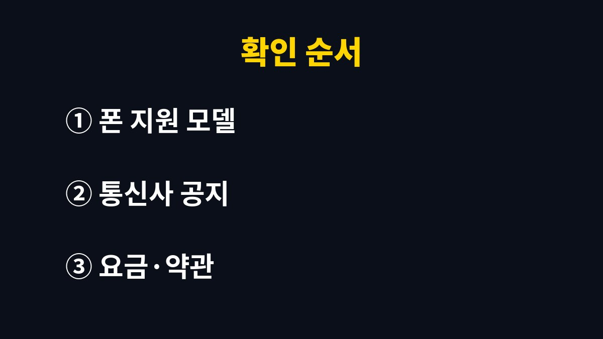

스마트폰 위성 통신은 별도의 위성 전화기 없이 평소 쓰던 폰으로 하늘의 위성과 직접 신호를 주고받는 기능이다.
삼성전자가 갤럭시 S26 시리즈와 함께 위성 통신 지원을 알렸고, 스페이스X의 스타링크도 스마트폰 직접 연결 서비스를 전면에 내세우고 있다.
다만 국내에서 언제부터 어떤 요금으로 쓸 수 있는지는 내가 확인한 공식 자료에 나오지 않았다.
지금 소개되는 스마트폰 위성 통신은 기지국이 닿지 않는 곳에서 짧은 문자나 구조 요청 같은 짧은 연락을 이어 주는 쪽에 가깝다.
하늘이 트인 곳에서 위성을 향해 신호를 보내는 구조라 건물 안이나 지하에서는 기대를 낮춰야 한다.
고속 인터넷을 대신한다는 뜻은 아니다.
실제로 어떤 기능까지 열리는지는 제조사와 통신사가 따로 밝히는 범위를 기준으로 본다.
폰이 위성 통신을 지원해도 서비스를 여는 쪽은 통신사와 위성 사업자다.
기기 기능이 있어도 나라별 허가와 제휴가 끝나야 실제로 켜진다.
통화 품질도 지상 기지국처럼 안정적이라고 단정하기 어렵다.
기존 위성 전화기는 두툼한 전용 단말기를 따로 들고 다니는 방식이었다.
새 방식은 평소 쓰는 스마트폰이 그대로 단말기가 된다는 점이 다르다.
대신 연결 속도와 쓸 수 있는 기능은 전용 장비보다 제한될 수 있다.
전용 장비는 전파 세기가 강한 대신 값이 비싸고 무거웠다. 스마트폰 방식은 그 부담을 덜지만 안테나 크기에서 오는 한계가 남는다.
삼성전자 뉴스룸은 갤럭시 S26 시리즈의 위성 통신 지원을 안내했다.
스타링크 직접 연결 위성은 관련 보도에서 궤도에 100개 이상 올라갔다고 전해졌다.
아래 표는 확인된 것과 아직 비어 있는 것을 나눠 적은 것이다.
위성 쪽에서는 지상 기지국처럼 하늘에 떠 있는 위성이 기지국 역할을 한다.
그래서 위성 수가 늘수록 연결 가능한 지역과 시간대가 넓어지는 구조다.
다만 위성이 많다는 사실과 국내에서 서비스가 열린다는 사실은 별개의 이야기다.
| 구분 | 확인된 내용 | 아직 확정되지 않은 것 |
|---|---|---|
| 기기 | 갤럭시 S26 시리즈 위성 통신 지원 발표 | 국내 모델에서 쓸 수 있는 범위 |
| 위성 | 스타링크 직접 연결 위성 100개 이상 보도 | 국내 통신사와의 제휴 방식 |
| 요금 | 공식 안내 확인 못 함 | 별도 요금 여부와 금액 |
| 출시 | 해외 일부 지역 중심으로 소개 | 국내 서비스 시작일 |

등산로에서 기지국 신호가 사라진 장면을 떠올린다.
지금까지는 다음 마을까지 걸어 내려오는 수밖에 없었다.
위성 통신이 열리면 하늘이 트인 능선에서 내 위치와 짧은 문장을 보내는 일이 가능해진다.
이 기능이 빛나는 곳은 산, 바다, 섬처럼 기지국이 드문 곳이다.
도심에서 지금 쓰는 요금제의 데이터를 줄여 주는 기능은 아니라서 일상 사용자가 체감하는 변화는 작을 수 있다.
반대로 도심 한가운데서 지하철이 끊기는 구간은 위성이 해결해 주지 못한다.
위성 신호는 지붕과 터널 벽을 잘 통과하지 못하기 때문이다.
내 생활 반경이 대부분 도시라면 이 기능을 폰 선택의 기준으로 삼을 이유는 크지 않다.

지금 단계에서 폰을 바꿀 이유가 되기는 이르다.
다음에 볼 것은 삼성전자와 국내 통신사가 올리는 공식 공지 한 가지다.
출시일과 요금이 나오면 그때 내 이용 환경에 맞는지 따져 본다.
참고 자료: 삼성전자 뉴스룸 「갤럭시 S26 시리즈 위성 통신 지원 소식」(2026년 11월 확인)
※ 2026년 기준 공식 안내를 바탕으로 정리한 글이며, 기기·앱 버전에 따라 메뉴 이름이 다를 수 있다.